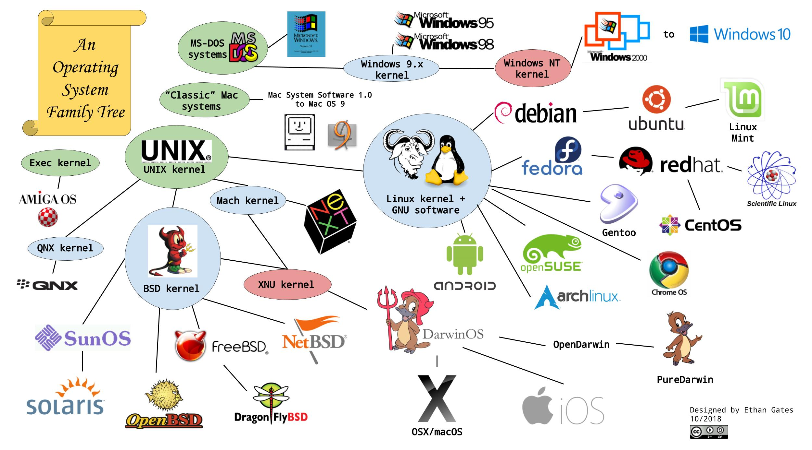

(https://raw.githubusercontent.com/EG-tech/digipres-posters/master/OS_kernel_timeline.jpg)ubuntu下载地址: https://cdimage.ubuntu.com/noble/daily-live/current/
操作系统的发展经历了数十年的演变，从早期的Unix到现代的Linux发行版和Windows系统，每个阶段都反映了技术进步和用户需求的变化。
Unix是最早的操作系统之一，由AT&T贝尔实验室在1969年开发，后来衍生出多个分支，包括商业化的System V和开源的BSD（伯克利软件发行版）。BSD进一步影响了现代系统，如macOS和FreeBSD，而System V则成为HP-UX、AIX等商业Unix的基础。
Linux的出现标志着开源操作系统的崛起。1991年，林纳斯·托瓦兹开发了Linux内核，随后基于该内核的发行版如雨后春笋般涌现。Red Hat系列（如RHEL、Fedora）专注于企业应用，Debian系列（如Ubuntu、Linux Mint）则更注重易用性，而Arch Linux等发行版则面向高级用户，提供高度定制化体验。
与此同时，Windows系统从早期的DOS演变到现代的NT内核架构，经历了Windows XP、Windows 7等经典版本，最终发展为Windows 10和11，强调跨平台兼容性和安全性。此外，移动操作系统如Android（基于Linux）和iOS（基于BSD）也深刻影响了计算生态。
总体来看，操作系统的发展趋势是开源化、用户友好化和跨平台融合，未来可能进一步向云计算、容器化和智能化方向发展。